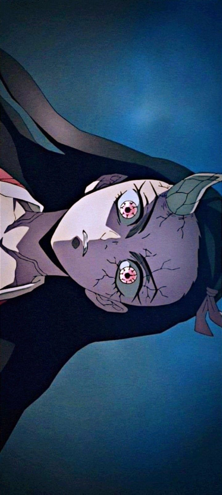
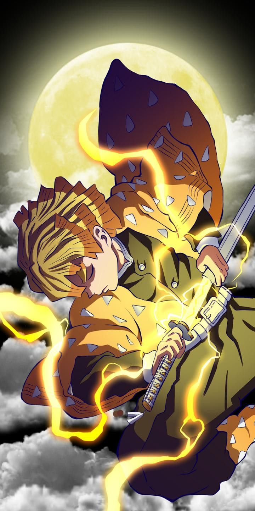
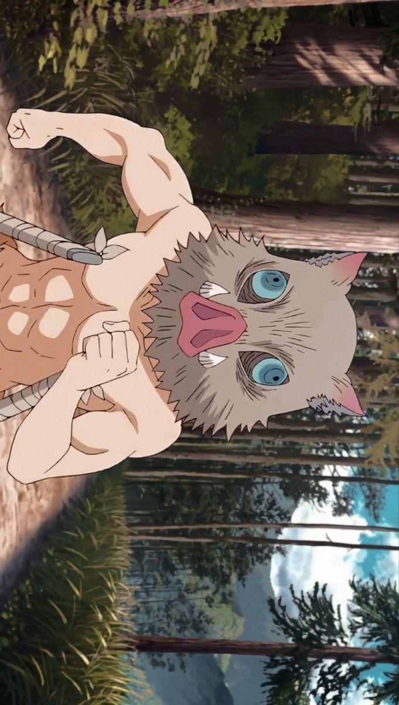
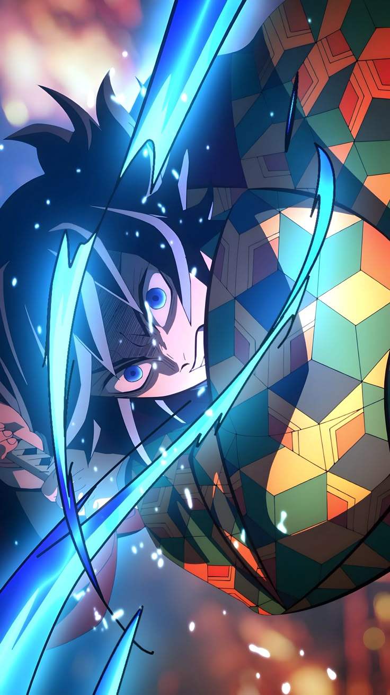
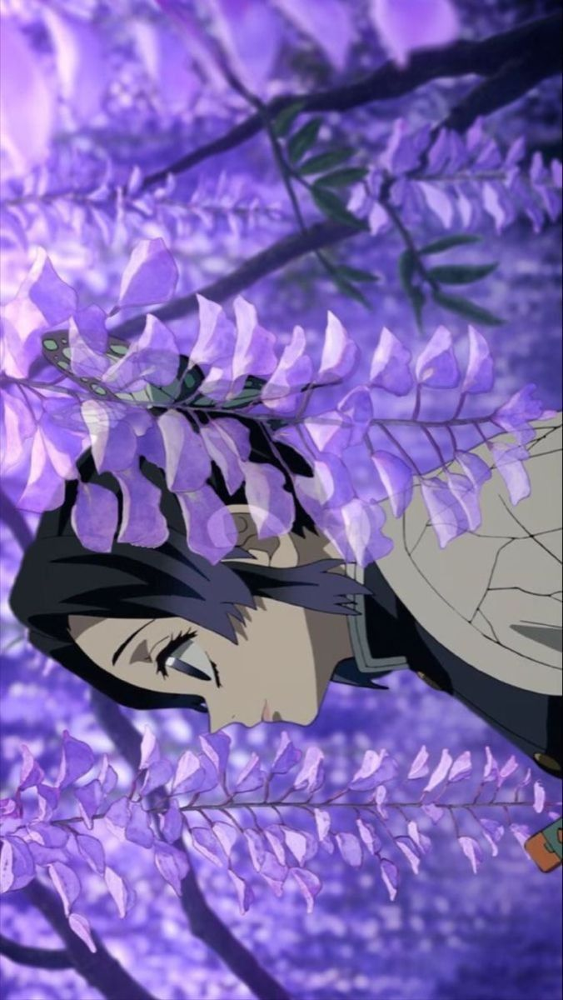
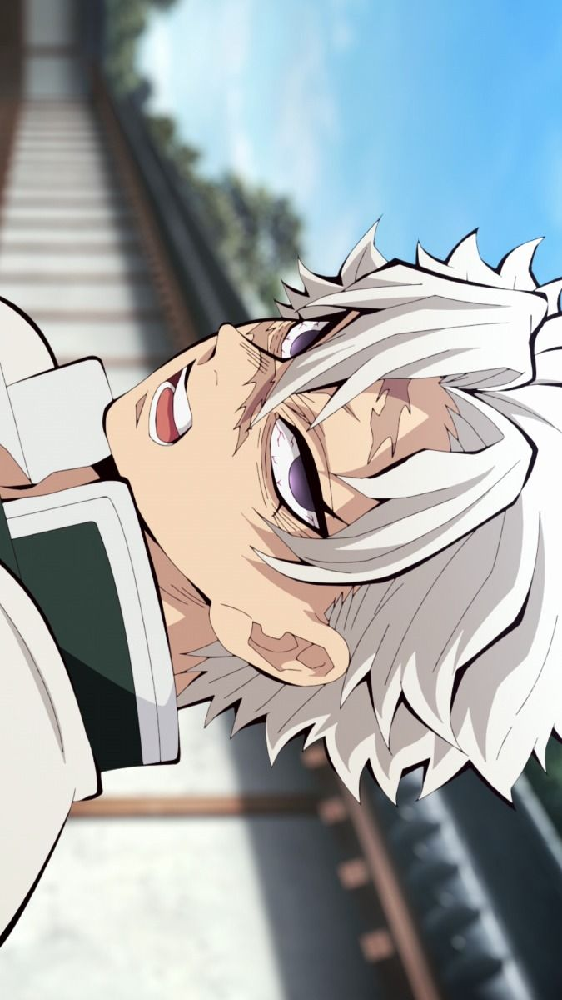
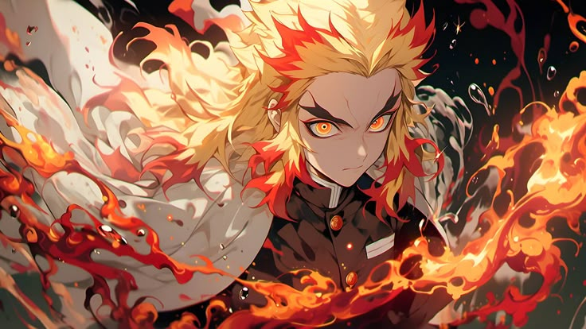
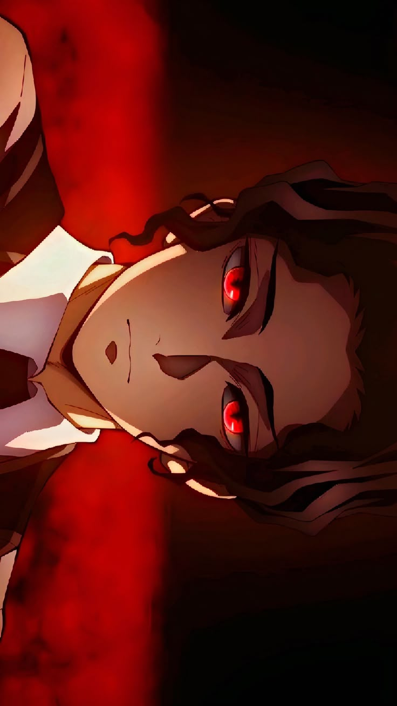

Danh Sách Nhân Vật

Kamado Tanjiro
Kiếm Sĩ
Nhân vật chính của bộ truyện, người có khả năng khứu giác siêu việt và sử dụng Hơi Thở Nước để chiến đấu.
Xem Chi Tiết
Kamado Nezuko
Quỷ
Em gái của Tanjiro, bị biến thành quỷ nhưng vẫn giữ được ý thức của con người. Có khả năng đặc biệt thay đổi kích thước cơ thể.
Xem Chi Tiết
Agatsuma Zenitsu
Kiếm Sĩ
Người bạn của Tanjiro, thường tỏ ra nhát gan nhưng khi ngủ lại có sức mạnh kinh người. Sử dụng Hơi Thở Sấm Sét.
Xem Chi Tiết
Hashibira Inosuke
Kiếm Sĩ
Đồng đội của Tanjiro với tính cách hoang dã và mạnh mẽ. Luôn đeo mặt nạ lợn rừng và sử dụng Hơi Thở Thú.
Xem Chi Tiết
Tomioka Giyu
Trụ Cột
Trụ Cột Nước của Đoàn Diệt Quỷ, người đã giới thiệu Tanjiro vào tổ chức. Sử dụng Hơi Thở Nước ở trình độ cao nhất.
Xem Chi Tiết
Kocho Shinobu
Trụ Cột
Trụ Cột Côn Trùng, người có tính cách dịu dàng nhưng ẩn chứa sự thù hận sâu sắc với loài quỷ. Sử dụng thuốc độc thay vì chém đứt đầu quỷ.
Xem Chi Tiết
Shinazugawa Sanemi
Trụ Cột
Trụ Cột Gió với tính cách hung hăng và nóng nảy. Có cơ thể đặc biệt thu hút quỷ và sử dụng Hơi Thở Gió mạnh mẽ.
Xem Chi Tiết
Rengoku Kyojuro
Trụ Cột
Trụ Cột Lửa với tinh thần nhiệt huyết và lòng dũng cảm. Người luôn nỗ lực hết mình để bảo vệ người dân khỏi quỷ dữ.
Xem Chi Tiết
Kibutsuji Muzan
Thượng Huyền
Quỷ đầu tiên và mạnh nhất, người đã biến Nezuko thành quỷ. Là kẻ thù chính của Đoàn Diệt Quỷ và mục tiêu cuối cùng của Tanjiro.
Xem Chi TiếtGiới Thiệu Kimetsu no Yaiba
Kimetsu no Yaiba (鬼滅の刃) hay Thanh Gươm Diệt Quỷ là một bộ manga Nhật Bản được viết và minh họa bởi Koyoharu Gotouge. Câu chuyện kể về Kamado Tanjiro, một cậu bé trở thành thợ săn quỷ sau khi gia đình cậu bị tàn sát và em gái Nezuko bị biến thành quỷ.
Bộ truyện được xuất bản trên tạp chí Weekly Shōnen Jump của Shueisha từ tháng 2 năm 2016 đến tháng 5 năm 2020, và đã được tổng hợp thành 23 tập tankōbon.
Năm 2019, manga được chuyển thể thành anime do studio ufotable sản xuất và đã nhanh chóng trở thành hiện tượng toàn cầu, đặc biệt là với bộ phim điện ảnh "Mugen Train" trở thành phim có doanh thu cao nhất mọi thời đại tại Nhật Bản.
Thông tin chính
- Tác giả: Koyoharu Gotouge
- Thể loại: Hành động, Phiêu lưu, Kỳ ảo tối
- Xuất bản: 2016 - 2020
- Số tập manga: 23 tập
- Anime: 3 mùa (Đến 2023)
- Phim điện ảnh: Kimetsu no Yaiba: Mugen Train (2020)
Bộ truyện nổi tiếng với hệ thống chiến đấu dựa trên "Hơi Thở" độc đáo và những nhân vật có cá tính mạnh mẽ.